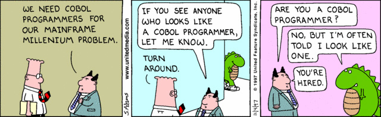

1. DISPLAY "Hallo Münster 2021!"
Wir schreiben das Jahr 2021 - warum sollten wir jetzt noch COBOL lernen?
1.1. Einige Fakten
-
COBOL läuft bei 90% der Fortune 500 Firmen im täglichen Einsatz
-
71% der kritischen Geschäftslogik dieser Firmen ist in COBOL
-
COBOL läuft bei 80% aller Point-of-sale Transaktionen
Quelle: [mf]
1.2. Und nun?
In regelmäßigen Abständen erscheinen Artikel wie diese:
Cobol ist aus großen Banken, Konzernen und Teilen der US-Regierung nicht wegzudenken. Vor allem für die Finanzbranche hat die Uralt-Programmiersprache eine große Bedeutung.
Manager Magazin: US-Banken holen IT-Kräfte aus Ruhestand zurück
|
Schlecht für die Firmen, gut für die COBOL-Programmierer!  |
2. Was ist COBOL denn nun eigentlich?
Eine vom amerikanischen Verteidigungsministerium eingesetze Arbeitsgruppe unter Leitung von Grace Hopper verabschiedete 1960 CODASYL, welches als COBOL-60 bekannt wurde und stets weiterentwickelt wurde.
2.1. Hallo Welt!
Da es zum guten Ton gehört eine Programmiersprache mit einem "Hallo Welt!"-Gruß einzuführen und COBOL nicht dafür bekannt ist mit Traditionen zu brechen, sagen wir zuerst Hallo Welt!
IDENTIFICATION DIVISION.
PROGRAM-ID. halloWelt. (1)
PROCEDURE DIVISION.
DISPLAY "Hallo Welt!".
STOP RUN.| 1 | Der Programmname |
Hierbei ist zu beachten, dass die meisten Legacy-COBOL Anwendungen im fixed format geschrieben sind. Das bedeutet, es ist wichtig, auf welcher Spalte ein Befehl oder Zeichen steht:
2.2. Ein Format sie zu knechten
Eine Zeile klassisches Cobol ist 80 Zeichen lang, denn so viele Zeichen passen auf eine normale Lochkarte:
(1)
------*A---B---+---+---+---+---+---+---+---+---+---+---+---+---+---+---+-------
* Eine Kommentarzeile (2)
IDENTIFICATION DIVISION. (3)
PROGRAM-ID. halloWelt. DOKU
PROCEDURE DIVISION.
DISPLAY "Hallo Welt!". (4)
STOP RUN.| 1 | Die Spalten 1 bis 6 sowie 73 bis 80 werden vom Compiler ignoriert und können zu Dokumentationszwecken genutzt werden.[1] |
| 2 | Eine Kommentarzeile wird durch einen * in Spalte 7, der Indikatorspalte, erkannt. |
| 3 | Eine DIVISION beginnt in Area A, dem Bereich von Spalte 8 bis Spalte 11. Ebenso SECTION Namen und PARAGRAPH Namen. |
| 4 | Normale Befehle stehen in Area B von Spalte 12 bis 71. |
Der GnuCOBOL-Compiler unterstützt zusätzlich noch so einen modernen Modus, den Free-Format Mode. Dabei sind die Einrückungen dann egal und man kann Hallo Welt! noch prägnanter schreiben:
program-id.hello.procedure division.display "Hallo Welt!".Wem das noch nicht kurz genug ist, nimmt die definitiv kürzeste Variante:
display"Hallo Welt!".Das soll ein gültiges COBOL-Programm sein? Schauen wir uns an, was cobcfrelax-syntax
$ cobc -x -frelax-syntax -free hallo.cob
hallo.cob: 1: Warning: PROGRAM-ID header missing - assumed
hallo.cob: 1: Warning: PROCEDURE DIVISION header missing - assumed|
Da praktisch jede Legacy-COBOL Anwendung im |
2.3. Klarheit der Sprache
COBOL steht für Common Business Oriented Language und hat in diesem Sinne den Anspruch, möglichst lesbar zu sein.
|
Die Lesbarkeit und Verständlichkeit ist COBOLs große Stärke. Es gibt wenige Programmiersprachen, in denen die tatsächliche Geschäftslogik derart sprechend ablesbar ist. |
In einer Übungsaufgabe haben wir einen Mehrwertsteuer-Rechner implementiert. Zur Erinnerung hier nochmal der Code:
IDENTIFICATION DIVISION.
PROGRAM-ID. MWST.
ENVIRONMENT DIVISION.
DATA DIVISION.
WORKING-STORAGE SECTION.
01 NETTO-BETRAG PIC 999V99.
01 BRUTTO-BETRAG PIC 999.99.
01 MWST PIC V999 VALUE .19.
PROCEDURE DIVISION.
PERFORM CALCULATE-MWST
GOBACK
.
CALCULATE-MWST SECTION.
COMPUTE BRUTTO-BETRAG ROUNDED
= NETTO-BETRAG * (1 + MWST)
.
EXIT.
END PROGRAM MWST.Wir schauen uns jetzt eine mögliche Implementierung der gleichen Funktionalität in Java an.
2.3.1. Mehrwertsteuer in Java
Wir sparen uns jetzt die schrittweise Implementierung sondern schauen uns direkt die Testfälle und die zugehörige Implementierung an:
class MehrwertsteuerRechnerTest {
@Test
void testNettoBetragVon0EURist0EUR() {
MehrwertsteuerRechner rechner = new MehrwertsteuerRechner();
BigDecimal bruttoBetrag = rechner.berechneNettoBetrag(BigDecimal.ZERO);
assertThat(bruttoBetrag.compareTo(BigDecimal.ZERO), is(0));
}
@Test
void testNettoBetragVon100EURist119EUR() {
MehrwertsteuerRechner rechner = new MehrwertsteuerRechner();
BigDecimal eur100 = new BigDecimal(100L);
BigDecimal eur119 = new BigDecimal(119L);
BigDecimal bruttoBetrag = rechner.berechneNettoBetrag(eur100);
assertThat(bruttoBetrag.compareTo(eur119), is(0));
}
@Test
void testNettoBetragVon1Eur99Centist2Eur37Cent() {
MehrwertsteuerRechner rechner = new MehrwertsteuerRechner();
BigDecimal eur1cent99 = new BigDecimal(1.99d);
BigDecimal eur2cent37 = new BigDecimal(2.37d).setScale(2, RoundingMode.HALF_UP);
BigDecimal bruttoBetrag = rechner.berechneNettoBetrag(eur1cent99);
assertThat(bruttoBetrag.compareTo(eur2cent37), is(0));
}
}Die Klasse MehrwertsteuerRechner
public class MehrwertsteuerRechner {
private static final int ANZAHL_NACHKOMMASTELLEN = 2;
private static BigDecimal MWST = new BigDecimal(0.19d);
public BigDecimal berechneNettoBetrag(BigDecimal bruttoBetrag) {
return bruttoBetrag.multiply(MWST.add(BigDecimal.ONE))
.setScale(ANZAHL_NACHKOMMASTELLEN, RoundingMode.HALF_UP);
}
}Die Implementierung des Mehrwersteuer-Rechners ist in Java durchaus kürzer, aber ist sie auch verständlicher?
|
Man vergleiche die Mehrwertsteuer-Logik in Java: mit der von COBOL: |
3. Aufbau eines COBOL-Programms
Nachdem wir jetzt ein einfaches COBOL-Programm gesehen haben, wollen wir uns mal die Details genauer anschauen. Nehmen wir den Programmrumpf aus der Mehrwertsteuer-Übung:
IDENTIFICATION DIVISION. (1)
PROGRAM-ID. MWST.
ENVIRONMENT DIVISION. (1)
DATA DIVISION. (1)
WORKING-STORAGE SECTION.
01 NETTO-BETRAG PIC 999V99.
01 BRUTTO-BETRAG PIC 999.99.
01 MWST PIC V999 VALUE .19.
PROCEDURE DIVISION. (1)
PERFORM CALCULATE-MWST
GOBACK
.
CALCULATE-MWST SECTION.
* Noch nicht implementiert
.
EXIT.
END PROGRAM MWST.| 1 | Ein COBOL-Programm besteht aus genau 4 |
Schauen wir uns nun jede DIVISION
3.1. IDENTIFICATION DIVISION
Die IDENTIFICATION DIVISION
Verpflichtend ist der Eintrag PROGRAMM-ID. program-name.
Für ein Programm wie unseren
Mehrwertsteuer-Rechner ist der Programm-Name unwichtig, aber für Unterprogramme
gibt der Programm-Name an, wie dieses Programm per |
Weitere Attribute in der IDENTIFICATION DIVISION
IDENTIFICATION DIVISION.
PROGRAM-ID. meinErstesProgramm.
AUTHOR. Bob der Dinosaurier.
DATE-WRITTEN. 20th June 2018.3.2. ENVIRONMENT DIVISION
Die Idee der ENVIRONMENT DIVISION
Teil der Laufzeit-Umgebung sind z.Bsp. die Pfade von Dateien, die das Programm einlesen oder ausgeben soll.
Das kann man dann in der INPUT-OUTPUT SECTION
ENVIRONMENT DIVISION.
CONFIGURATION SECTION.
INPUT-OUTPUT SECTION.
FILE-CONTROL.
SELECT Students ASSIGN TO "C:\Daten\Students.txt"
ORGANIZATION IS SEQUENTIAL.3.3. DATA DIVISION
In der DATA DIVISION
3.3.1. Definition von Variablen
Schauen wir uns einige Beispiele an. Soll das Programm den Namen des Benutzers einlesen, braucht man ein Datenfeld um den Namen zu speichern.
In COBOL gibt es keinen Datentyp String
01 BENUTZER-NAME PIC A(30) VALUE SPACES.In diesem Beispiel ist das Datenfeld BENUTZER-NAMEA
Würden wir im BENUTZER-NAMENAX
01 BENUTZER-NAME PIC X(30) VALUE SPACES.Würde man das Alter
01 BENUTZER-ALTER PIC 9(02) VALUE SPACES.Hier wäre das Datenfeld für das BENUTZER-ALTER
|
Folgende
|
Diese Datendefinition für BENUTZER-ALTER
Was wäre die Ausgabe dieses Programms?
IDENTIFICATION DIVISION.
PROGRAM-ID. COMMAND.
ENVIRONMENT DIVISION.
DATA DIVISION.
WORKING-STORAGE SECTION.
01 BENUTZER-ALTER PIC 99.
PROCEDURE DIVISION.
DISPLAY "Hallo. Bitte Alter eingeben:"
ACCEPT BENUTZER-ALTER
DISPLAY "Sie sind " BENUTZER-ALTER
GOBACK
.
END PROGRAM COMMAND.Gibt ein Benutzer hier 100
Sie sind 10.|
Nicht so gut. Wir werden aber später noch Möglichkeiten kennenlernen, auf diese Situationen angemessen zu reagieren. |
COBOL bietet eine ganze Reihe Möglichkeiten, seine Datenfelder möglichst genau zu spezifizieren.
Im ersten Schritt ist es aber ausreichend, wenn wir uns die eben genannten Beispiele merken und noch ein
bißchen Verständnis der WORKING-STORAGE SECTION
3.3.2. Gruppenstrukturen
Eine weitere wichtige Möglichkeit, Variablen in COBOL zu definieren, sind Gruppenstrukturen.
Wenn wir zu einem Benutzer seinen Vornamen, Nachnamen und das Alter speichern wollen, können wir uns eine Struktur BENUTZER
01 BENUTZER. (1)
05 VORNAME PIC X(30).
05 NACHNAME PIC X(30).
05 B-ALTER PIC 999. (2)| 1 | Hier wird die Struktur definiert. Beachte, dass hier keine |
| 2 | Da |
Angenommen, wir haben noch einen Admin und müssen auch seinen Vornamen, Nachnamen und sein Alter merken. Wir würden uns also eine ähnliche Struktur anlegen:
01 ADMIN.
05 VORNAME PIC X(30).
05 NACHNAME PIC X(30).
05 A-ALTER PIC 999. (1)| 1 | Das Feld heißt nun nicht |
Gut. Nun wollen wir dem Admin den Vornamen BOFH [4] zuweisen. Dazu nutzen wir den MOVE-Befehl:
IDENTIFICATION DIVISION.
PROGRAM-ID. DATADEFS.
ENVIRONMENT DIVISION.
DATA DIVISION.
WORKING-STORAGE SECTION.
01 BENUTZER.
05 VORNAME PIC X(30).
05 NACHNAME PIC X(30).
05 B-ALTER PIC 999.
01 ADMIN.
05 VORNAME PIC X(30).
05 NACHNAME PIC X(30).
05 A-ALTER PIC 999.
PROCEDURE DIVISION.
MOVE "BOFH" (1)
TO VORNAME
DISPLAY VORNAME
GOBACK
.
END PROGRAM DATADEFS.| 1 | Der Variable |
Funktioniert das so?
cobc -x DATADEFS.cbl DATADEFS.cbl:18: error: 'VORNAME' is ambiguous; needs qualification DATADEFS.cbl:8: error: 'VORNAME IN BENUTZER' defined here DATADEFS.cbl:12: error: 'VORNAME IN ADMIN' defined here
Der Compiler beschwert sich: er weiß nicht, welcher VORNAMEVORNAMEBENUTZERADMIN
Wir müssen ihm auf die Sprünge helfen und unsere Variable qualifizieren:
MOVE "BOFH"
TO VORNAME IN ADMIN (1)| 1 | Das |
Mit Hilfe dieser abgestuften Definitionen lassen sich strukturierte Daten in COBOL wunderbar abbilden. Dafür werden wir in den späteren Kapiteln noch diverse Beispiele sehen.
3.3.3. Arrays
Um mehrdimensionale Strukturen abbilden zu können, also beispielsweise Spielfelder oder - ganz allgemein - Matrizen, gibt es Arrays.
Wollen wir ein 3x3
01 SPIELFELD.
05 Y-ACHSE OCCURS 3.
07 ZELLE PIC X OCCURS 3.Auf die Zellen des Spielfelds können wir jetzt zugreifen:
MOVE "X"
TO ZELLE(2,1)Dieser Befehl setzt ein X
Interessant wird es, wenn wir das ganze Spielfeld auf einmal mit Werten befüllen wollen. Falls wir die Zellen des Spielfelds der Reihe nach durchnummerieren wollen, reicht dafür dieser Befehl:
MOVE "123456789"
TO SPIELFELDWarum funktioniert das? Wie im Abschnitt über Gruppenstrukturen ist die Erklärung der Compiler:
Für den Compiler ist das Feld Spielfeld123456789Y-ACHSEZELLE
Mit diesem Wissen können wir das Spielfeld auch sehr leicht auf einen komplett leeren Zustand zurücksetzen:
MOVE SPACES
TO SPIELFELD3.3.4. WORKING-STORAGE SECTION
Die WORKING-STORAGE SECTION ist ein zusammenhängender Speicherbereich, in dem alle Variablen des Programms gespeichert werden. Die Datenfeld-Definitionen haben keinen Einfluss auf den tatsächlichen Aufbau des reservierten Speicherbereichs.
|
Die Datenfelddefinitionen in der |
Schauen wir uns ein kurzes Beispiel an, um das Schablonen-Prinzip zu verdeutlichen. Angenommen, wir haben ein Programm mit folgender WORKING-STORAGE SECTION
WORKING-STORAGE SECTION.
01 BENUTZER-ALTER PIC 99.
01 BENUTZER-NAME PIC X(30).Der Compiler berechnet nun das OFFSET
BENUTZER-ALTER: +0 (1)
BENUTZER-NAME: +2 (2)| 1 | Das Feld |
| 2 | Der Compiler berechnet die Länge aller vorher definierten Felder und kennt somit den Startpunkt von |
Insgesamt wäre die WORKING-STORAGE SECTION
Das soll an dieser Stelle für einen groben Überblick reichen. Wir werden später ausführlich die Datendefinitionen besprechen.
3.4. PROCEDURE DIVISION
Die PROCEDURE DIVISIONDATA DIVISION
Sie ist hierarchisch aufgebaut und besteht aus Paragraphen, Sections und Statements. Paragraphen und Sections dienen zur
Strukturierung des Programms und können mit PERFORMGO TO aufgerufen werden.
Da das Zitieren von Fachartikeln aus den 1970iger Jahren einen Text seriös wirken lässt[5], soll hier
angemerkt werden, dass Sprungbefehle wie GO TO
In der PROCEDURE DIVISION
3.4.1. Datenmanipulationen
Angenommen, wir haben eine Variable TEMP-NAME
01 TEMP-NAME PIC X(30).Wie können wir dieser Variable einen Wert zuweisen?
Dafür gibt es den MOVE
3.4.1.1. Elementarer MOVE
MOVE "Bob"
TO TEMP-NAMEFür strukturierte Felder funktioniert das ebenso. Nehmen wir das Beispiel aus dem Abschnitt über strukturierte Daten:
01 BENUTZER.
05 VORNAME PIC X(30).
05 NACHNAME PIC X(30).
05 B-ALTER PIC 999.
01 ADMIN.
05 VORNAME PIC X(30).
05 NACHNAME PIC X(30).
05 A-ALTER PIC 999.Wenn wir jetzt einen BENUTZERThomas|Müller|29ADMINMOVE
MOVE BENUTZER
TO ADMIN Dieser Gruppen-Move funktioniert nur, wenn BENUTZERADMIN
Wären bei ADMIN
01 ADMIN.
05 VORNAME PIC X(30).
05 A-ALTER PIC 999. (1)
05 NACHNAME PIC X(30).| 1 | Das Alter kommt jetzt vor dem Nachnamen |
Dann kommt nicht das gewünschte Ergebnis raus. Der Compiler berechnet die Länge, die BENUTZERADMIN
Möchte man einen Gruppenmove, wo nur Felder mit dem gleichen Namen aufeinander abgebildet werden,
kann man den Befehl MOVE CORRESPONDING
|
Der Befehl Was könnte der Grund dafür sein? |
Schauen wir uns im Detail an, wie der MOVE
3.4.1.2. MOVE unter der Lupe
Angenommen, wir haben ein numerisches Feld:
01 TEMP-FELD PIC 9.und wir versuchen, diesem Feld einen Buchstaben zuzuweisen:
MOVE "A"
TO TEMP-FELDWas passiert? Der GnuCOBOL
IDENTIFICATION DIVISION.
PROGRAM-ID. DATADEFS.
ENVIRONMENT DIVISION.
DATA DIVISION.
WORKING-STORAGE SECTION.
01 TEMP-FELD PIC 9.
PROCEDURE DIVISION.
MOVE "A"
TO TEMP-FELD
DISPLAY TEMP-FELD
GOBACK
.
END PROGRAM DATADEFS.Wandeln wir das Programm nun um und führen es aus:
cobc -x DATADEFS.cbl ./DATADEFS A
Wir sehen also: nichts passiert! Am Ende steht in TEMP-FELD
Das ist ungünstig, aber GnuCOBOLMOVE
cobc -x --Wall DATADEFS.cbl DATADEFS.cbl:11: warning: numeric value is expected DATADEFS.cbl:7: warning: 'TEMP-FELD' defined here as PIC 9
|
Es empfiehlt sich generell mit der Compiler-Option Alles, was der Compiler für uns sicherstellt, müssen wir nicht mehr testen! |
Auch an Stellen, wo der Compiler uns nicht weiterhelfen kann, z.Bsp. bei externen Datenquellen,
sind wir nicht auf verlorenem Posten. Wir können mit IS NUMERICTEMP-FELD
IDENTIFICATION DIVISION.
PROGRAM-ID. DATADEFS.
ENVIRONMENT DIVISION.
DATA DIVISION.
WORKING-STORAGE SECTION.
01 TEMP-FELD PIC 9.
PROCEDURE DIVISION.
MOVE "A"
TO TEMP-FELD
IF TEMP-FELD IS NUMERIC THEN
DISPLAY "Numerisch"
ELSE
DISPLAY "Nicht numerisch"
END-IF
GOBACK
.
END PROGRAM DATADEFS.Und dieses Programm liefert - wenig überraschend - die Ausgabe
Nicht numerisch
Schauen wir uns noch 2 weitere Möglichkeiten an, Variablen Werte zuzuweisen:
3.4.1.3. INITIALIZE
Mit dem INITIALIZEZEROSPACE
Das ist insbesondere für Gruppenstrukturen nützlich. Möchte man einen neuen BENUTZERBENUTZER
Eine Möglichkeit wäre:
MOVE SPACES
TO VORNAME IN BENUTZER
NACHNAME IN BENUTZER
MOVE ZERO
TO B-ALTER IN BENUTZERDa das insbesondere für größere Strukturen sehr umständlich wäre, kann man das kürzer schreiben:
INITIALIZE BENUTZER|
Variablen in der Das Feld |
Welchen Inhalt hat PLZ-MUENSTER-X4TELINITIALIZE PLZ-MUENSTER-X4TEL
3.4.1.4. SET
Es gibt eine weitere Möglichkeit um Variablen Werte zuzuweisen, welche insbesondere im Abschnitt über Bedingungen nützlich ist.
Nehmen wir an, wir möchten zu einem BENUTZERSTATUSSTATUS
-
NORMAL -
PREMIUM -
GESPERRT
annehmen. Diesen beschränkten Wertebereich können wir nun z.Bsp. so modellieren:
01 BENUTZER.
...
05 BSTATUS PIC X VALUE SPACE. (1)
88 NORMAL VALUE SPACE. (2)
88 PREMIUM VALUE 'P'.
88 GESPERRT VALUE 'G'.| 1 | Da |
| 2 | Der Wert |
Um nun einem BENUTZERPREMIUM
MOVE 'P'
TO BSTATUSals auch
SET PREMIUM
TO TRUEschreiben. Dabei ist die letztere Variante natürlich deutlich lesbarer, denn nicht
jeder Leser des Codes weiß sofort, dass PPREMIUM
|
Die |
3.4.2. Bedingungen
Natürlich gibt es auch in COBOL die aus anderen Sprachen bekannten IF-Abfragen.
3.4.2.1. IF-Abfragen
Nehmen wir unseren BENUTZER
01 BENUTZER.
05 VORNAME PIC X(30).
05 B-ALTER PIC 999.
05 BSTATUS PIC X VALUE SPACE.
88 NORMAL VALUE SPACE.
88 PREMIUM VALUE 'P'.
88 GESPERRT VALUE 'G'.Dann können wir in unserem Programm z.Bsp. diese Bedingungen formulieren:
IF VORNAME = "Michael" THEN
DISPLAY "Hallo Michael!"
END-IFOder auch mit einem ELSE-Zweig
IF VORNAME = "Michael" THEN
DISPLAY "Hallo Michael!"
ELSE
DISPLAY "Hallo, jemand anderes als Michael!"
END-IFIn COBOL gibt es kein Zeichen für ungleich, sondern man muss das
Schlüsselwort NOT
IF VORNAME NOT = "Michael" THEN
DISPLAY "Hallo, jemand anderes als Michael!"
ELSE
DISPLAY "Hallo Michael!"
END-IF3.4.2.2. IF-Abfragen mit AND und OR
Schauen wir uns an, wie nützlich die 88-igerBENUTZERGESPERRT
IF GESPERRT THEN
DISPLAY "Benutzer ist gesperrt"
END-IFOder analog:
IF NOT GESPERRT THEN
DISPLAY "Benutzer ist nicht gesperrt"
END-IFMan kann Bedingungen auch mittels OR
IF NORMAL OR PREMIUM THEN
DISPLAY "Hallo aktiver Benutzer!"
END-IFOder mittels AND
IF PREMIUM AND B-ALTER >= 16 THEN
DISPLAY "Du darfst ein Bier bestellen."
END-IFDa sich COBOL als Ziel gesetzt hat, möglichst in flüssigem Englisch programmieren zu können, ist auch sowas erlaubt:
IF PREMIUM AND
B-ALTER GREATER THAN OR EQUAL TO 16
THEN
DISPLAY "Du darfst ein Bier bestellen."
END-IF3.4.2.3. Tests auf Datentypen
Wenn wir z.Bsp. das Alter eines BENUTZER
Um zu prüfen, ob in einer Variable ein numerischer Wert steht, können wir
den Klassentest NUMERIC
IF TEMP-FELD IS NUMERIC THEN
DISPLAY "Das Feld enthält nur Ziffern."
END-IFEbenso können wir prüfen, ob der NameBENUTZER
IF VORNAME IS ALPHABETIC THEN
DISPLAY "Das Feld enthält nur Buchstaben."
END-IF|
Der
|
3.4.2.4. EVALUATE
Nehmen wir an, wir wollen je nach StatusBENUTZERIF
IF PREMIUM THEN
DISPLAY "Nutzer ist Premium-Kunde."
ELSE
IF GESPERRT THEN
DISPLAY "Nutzer ist gesperrt."
ELSE
IF NORMAL THEN
DISPLAY "Nutzer ist normal."
ELSE
DISPLAY "Ungültiger Status."
END-IF
END-IF
END-IFDieser Code ist sowohl unverständlich, als auch schlecht erweiterbar, falls es eine
neue Status
Wesentlich schöner geht es mit dem EVALUATE
EVALUATE TRUE
WHEN NORMAL
DISPLAY "User ist normal."
WHEN PREMIUM
DISPLAY "Nutzer ist Premium-Kunde."
WHEN GESPERRT
DISPLAY "Nutzer ist gesperrt."
WHEN OTHER (1)
DISPLAY "Status ist ungültig."
END-EVALUATE| 1 | Der |
Noch nützlicher wird das EVALUATE
Wir wollen herausfinden, ob ein BENUTZER
-
Den Status
PREMIUM16 -
Den Status
NORMAL18
Das modellieren wir mit EVALUATE
EVALUATE TRUE ALSO B-ALTER (1)
WHEN PREMIUM ALSO GREATER THAN OR EQUAL TO 16 (2)
WHEN NORMAL ALSO GREATER THAN OR EQUAL TO 18
DISPLAY "Du darfst ein Bier bestellen."
WHEN OTHER
DISPLAY "Du darfst leider kein Bier bestellen."
END-EVALUATE| 1 | Jeder |
| 2 | Die erste Bedingung, die zu |
Es ist Geschmackssache, ob man folgende Variante für lesbarer hält:
EVALUATE TRUE ALSO TRUE (1)
WHEN PREMIUM ALSO B-ALTER >= 16
WHEN NORMAL ALSO B-ALTER >= 18
DISPLAY "Du darfst ein Bier bestellen."
WHEN OTHER
DISPLAY "Du darfst leider kein Bier bestellen."
END-EVALUATE| 1 | Die zweite Bedingung ist nun nicht auf einen Vergleich von |
Semantisch äquivalent wäre auch noch diese Variante:
EVALUATE TRUE ALSO B-ALTER
WHEN PREMIUM ALSO >= 16
WHEN NORMAL ALSO >= 18
DISPLAY "Du darfst ein Bier bestellen."
WHEN OTHER
DISPLAY "Du darfst leider kein Bier bestellen."
END-EVALUATEWelche Variante man bevorzugt, kann jeder selber entscheiden.
3.4.3. Schleifen
Bei fast jeder Programmieraufgabe gibt es Dinge, die immer wieder getan werden müssen. Auch in COBOL gibt es für solche Fälle die bekannten Schleifen.
3.4.3.1. PERFORM n TIMES
Die einfachste Schleife mit fest definierter Durchlaufanzahl
ist PERFORM n TIMES
PERFORM 3 TIMES
DISPLAY "Hallo"
END-PERFORMDie Ausgabe dieses Programms ist wenig überraschend:
./NTIMES Hallo Hallo Hallo
Die Anzahl der Schleifendurchläufe muss nicht hart codiert sein, sondern kann durchaus variabel sein:
MOVE 4 TO TEMP-ZAEHLER
PERFORM TEMP-ZAEHLER TIMES
DISPLAY "Hallo"
END-PERFORM|
Frage 1
Wie oft wird diese Schleife durchlaufen? Antwort:
|
3.4.3.2. PERFORM UNTIL
In den meisten Fällen will man einen bestimmten Code-BlocknIndex
Dafür gibt es in COBOL das PERFORM VARYING … FROM … BY … UNTIL …
IDENTIFICATION DIVISION.
PROGRAM-ID. DATADEFS.
ENVIRONMENT DIVISION.
DATA DIVISION.
WORKING-STORAGE SECTION.
01 TEMP-ZAEHLER PIC 99. (1)
PROCEDURE DIVISION.
PERFORM VARYING TEMP-ZAEHLER FROM 1 BY 1 (2)
UNTIL TEMP-ZAEHLER > 10 (3)
DISPLAY TEMP-ZAEHLER
END-PERFORM
GOBACK
.
END PROGRAM DATADEFS.| 1 | Hier wird der Schleifenindex definiert. |
| 2 | Setzen des Startwerts von |
| 3 | Die Abbruchbedingung. |
Dieses Programm gibt die Zahlen von 1 bis 10 auf der Konsole aus.
|
Frage 2
Was passiert, wenn man den Index im Beispiel 1 so definiert: Antwort
|
-
Die Schrittweise ist standardmäßig schon
1BY 1 -
Mit
EXIT PERFORM CYCLE
Auch die VARYING
MOVE 1 TO TEMP-ZAEHLER (1)
PERFORM UNTIL TEMP-ZAEHLER > 10
DISPLAY TEMP-ZAEHLER
ADD 1 TO TEMP-ZAEHLER (2)
END-PERFORM| 1 | Der Startwert wird gesetzt. |
| 2 | Der Zähler muss manuell hochgezählt werden. |
3.4.3.2.1. WITH TEST AFTER
Wann wird die Abbruchbedingung der Schleife geprüft? Passiert das vor dem Durchlauf, oder danach? Probieren wir es aus:
MOVE 10 TO TEMP-ZAEHLER
PERFORM UNTIL TEMP-ZAEHLER = 10
DISPLAY TEMP-ZAEHLER
END-PERFORMWenn die Abbruchbedingung vor dem Durchlauf geprüft würde, würden wir keine Ausgabe erwarten:
./DATADEFS
>
Und so ist es auch. Wir können den Compiler aber auch dazu bringen, die Abbruchbedingung erst
am Ende zu prüfen, durch Zusatz von WITH TEST AFTER
MOVE 10 TO TEMP-ZAEHLER
PERFORM WITH TEST AFTER UNTIL TEMP-ZAEHLER = 10
DISPLAY TEMP-ZAEHLER
END-PERFORMNun bekommen wir:
./DATADEFS 10
Diese Unterscheidung wird beim Lesen von Dateien später noch wichtig werden.
3.4.4. Strukturierung
Um die Programmlogik strukturisieren und modularisieren zu können, gibt es in COBOL mehrere Möglichkeiten. Wir werden uns auf zwei Alternativen beschränken, die aber für die allermeisten Fälle genau passend sind.
3.4.4.1. SECTIONs
Programmlogik innerhalb der PROCEDURE DIVISIONSECTIONs
Schauen wir uns das Beispiel aus dem Kapitel über Schleifen nochmal an.
Wir könnten die Schleife in eine eigene SECTION
AUSGABE-ZAHLEN-1-BIS-10 SECTION. (1)
PERFORM WITH TEST AFTER VARYING TEMP-ZAEHLER FROM 1 BY 1
UNTIL TEMP-ZAEHLER = 10
DISPLAY TEMP-ZAEHLER
END-PERFORM
EXIT. (2)| 1 | Wir definieren eine |
| 2 | Am Ende einer |
Und diese dann in der PROCEDURE DIVISION
PROCEDURE DIVISION.
PERFORM AUSGABE-ZAHLEN-1-BIS-10
GOBACK
.|
Indem man Logik in eine eigene |
Das hat den großen Vorteil, dass jemand direkt beim Blick in die PROCEDURE DIVISION
|
Man könnte ja auch Kommentare verwenden, um die Logik zu beschreiben, z.Bsp.: Was ist der Nachteil an Kommentaren im Code? |
3.4.4.2. Paragraphen
Eine weitere Möglichkeit, COBOL-Code zu strukturieren, sind ParagraphenSECTION
DAS-IST-EIN-PARAGRAPH. (1)
DISPLAY "Herzlich Willkommen."
. (2)| 1 | Die Definition eines |
| 2 | Ein Paragraph endet immer beim nächsten Punkt. |
Dieser Paragraph kann jetzt auch mittels PERFORM
PERFORM DAS-IST-EIN-PARAGRAPH|
Der Unterschied zwischen |
Schauen wir uns einige Beispiele an.
Nehmen wir ein kleines Programm und strukturieren es mittels Paragraphen
IDENTIFICATION DIVISION.
PROGRAM-ID. DATADEFS.
ENVIRONMENT DIVISION.
DATA DIVISION.
PROCEDURE DIVISION.
PERFORM ICH-BIN-EIN-PARAGRAPH
PERFORM ICH-BIN-AUCH-EIN-PARAGRAPH
GOBACK
.
ICH-BIN-EIN-PARAGRAPH.
DISPLAY "Hallo,"
.
ICH-BIN-AUCH-EIN-PARAGRAPH.
DISPLAY "Welt!"
.
END PROGRAM DATADEFS.Führen wir dieses Programm aus, erhalten wir:
./DATADEFS Hallo, Welt!
Genau das Gleiche gilt, wenn wir aus den ParagraphenSECTION
IDENTIFICATION DIVISION.
PROGRAM-ID. DATADEFS.
ENVIRONMENT DIVISION.
DATA DIVISION.
PROCEDURE DIVISION.
PERFORM ICH-BIN-EINE-SECTION
PERFORM ICH-BIN-AUCH-EINE-SECTION
GOBACK
.
ICH-BIN-EINE-SECTION SECTION. (1)
DISPLAY "Hallo,"
.
ICH-BIN-AUCH-EINE-SECTION SECTION. (1)
DISPLAY "Welt!"
.
END PROGRAM DATADEFS.| 1 | Die |
An der Ausgabe des Programms hat sich nichts geändert, das können wir leicht nachprüfen.
3.4.4.3. Bitte nicht mischen!
|
Es ist keine gute Idee, sein Programm mit einer Mischung aus |
Warum ist das so? Schauen wir uns folgendes Beispiel an:
IDENTIFICATION DIVISION.
PROGRAM-ID. DATADEFS.
ENVIRONMENT DIVISION.
DATA DIVISION.
PROCEDURE DIVISION.
PERFORM ICH-BIN-EINE-SECTION (1)
PERFORM ICH-BIN-EIN-PARAGRAPH
PERFORM ICH-BIN-AUCH-EIN-PARAGRAPH
GOBACK
.
ICH-BIN-EINE-SECTION SECTION.
DISPLAY "Herzlich Willkommen!"
.
ICH-BIN-EIN-PARAGRAPH.
DISPLAY "Hallo,"
.
ICH-BIN-AUCH-EIN-PARAGRAPH.
DISPLAY "Welt!"
.
END PROGRAM DATADEFS.| 1 | Wir haben jetzt eine |
|
Frage 3
Welche Ausgabe erwarten wir bei dem obigen Programm? |
Probieren wir auch dieses Programm einmal aus:
./DATADEFS Herzlich Willkommen! Hallo, Welt! Hallo, Welt!
Überrascht? Warum ist das so? Warum haben wir zweimal als Ausgabe?
Hallo, Welt! Hallo, Welt!
Schauen wir uns die SECTIONICH-BIN-EINE-SECTION
ICH-BIN-EINE-SECTION SECTION.
DISPLAY "Herzlich Willkommen!"
.Wo ist diese SECTIONPARAGRAPHSECTIONParagraphenPERFORMSECTIONParagraphen
Gut, also haben wir schonmal verstanden, warum die Ausgabe so ist, wie sie ist.
Aber können wir die Mischung aus ParagraphenSECTIONs
In vielen Legacy-COBOL-Anwendungen findet man am Ende jeder SECTIONEXIT
ICH-BIN-EINE-SECTION SECTION.
DISPLAY "Herzlich Willkommen!"
EXIT. (1)| 1 | Hat das |
Wir können es ausprobieren… aber, um die Enttäuschung vorweg zu nehmen…
Nein, das EXIT
|
Ein Blick in die Dokumentation erklärt auch, warum |
Wie können wir denn dann unsere SECTIONICH-BIN-EINE-SECTION
|
Die Dokumentation ist eindeutig. Eine |
Daraus folgt direkt, dass eine Mischung aus ParagraphenSECTIONs
|
Wir werden unsere Beispiele mittels |
Mit COBOL 2002 gäbe es aber tatsächlich doch eine Möglichkeit, eine SECTIONEXIT SECTIONSECTION5.2 verfügbar.
|
Frage 4
Ist der Einsatz von |
4. Dateien Lesen und Schreiben
Mit COBOL ist es sehr einfach, Dateien einzulesen und auch wieder zu schreiben. Tatsächlich ist das auch eines der Haupteinsatzgebiete von COBOL.
Wir wollen uns anschauen, wie wir eine einfache Datei, in der Datensätze über Personen stehen, einlesen können.
IDENTIFICATION DIVISION.
PROGRAM-ID. IO.
ENVIRONMENT DIVISION.
INPUT-OUTPUT SECTION.
FILE-CONTROL.
SELECT STUDENT ASSIGN TO 'students.txt' (1)
ORGANIZATION IS LINE SEQUENTIAL.
DATA DIVISION.
FILE SECTION.
FD STUDENT.
01 STUDENT-FILE. (2)
05 STUDENT-ID PIC 9(5).
05 STUDENT-NAME PIC X(20).
WORKING-STORAGE SECTION.
01 WS-STUDENT.
05 WS-STUDENT-ID PIC 9(05).
05 WS-STUDENT-NAME PIC X(20).
01 WS-EOF PIC X(1).
PROCEDURE DIVISION.
OPEN INPUT STUDENT.
PERFORM UNTIL WS-EOF="Y" (3)
READ STUDENT INTO WS-STUDENT (4)
AT END MOVE "Y" TO WS-EOF (5)
NOT AT END DISPLAY WS-STUDENT (6)
END-READ
END-PERFORM
CLOSE STUDENT.
GOBACK
.
END PROGRAM IO.| 1 | Hier wird der Dateiname fixiert. |
| 2 | Wir beschreiben den Aufbau der Datei. Die Datei muss an den ersten 5 Stellen Ziffern
haben, die der |
| 3 | Es wird so lange ein neuer Satz, also die nächste Zeile, gelesen, bis der Schalter |
| 4 | Der Inhalt der Datei wird in die |
| 5 | Wird erkannt, dass die Datei bis zum Ende gelesen wurde, wird der Schalter |
| 6 | Der Inhalt von |
Das Programm liest die Datei students.txtWORKING-STORAGE SECTION
4.1. Schreiben von Dateien
Nehmen wir an, wir sollen die Datei aus dem vorherigen Beispiel einlesen und nur die Namen der Studenten ausgeben - ohne die ID
IDENTIFICATION DIVISION.
PROGRAM-ID. IO.
ENVIRONMENT DIVISION.
INPUT-OUTPUT SECTION.
FILE-CONTROL.
SELECT STUDENT-IN ASSIGN TO 'students.txt'
ORGANIZATION IS LINE SEQUENTIAL.
SELECT STUDENT-OUT ASSIGN TO 'output.txt' (1)
ORGANIZATION IS LINE SEQUENTIAL.
DATA DIVISION.
FILE SECTION.
FD STUDENT-IN.
01 STUDENT-IN-FILE.
05 STUDENT-ID PIC 9(5).
05 STUDENT-NAME PIC X(20).
FD STUDENT-OUT.
01 STUDENT-OUT-FILE.
05 STUDENT-NAME PIC X(20). (2)
WORKING-STORAGE SECTION.
01 WS-STUDENT.
05 WS-STUDENT-ID PIC 9(05).
05 WS-STUDENT-NAME PIC X(20).
01 WS-EOF PIC X(1).
PROCEDURE DIVISION.
OPEN OUTPUT STUDENT-OUT (3)
OPEN INPUT STUDENT-IN
PERFORM UNTIL WS-EOF="Y"
READ STUDENT-IN INTO WS-STUDENT
AT END MOVE "Y" TO WS-EOF
NOT AT END
MOVE WS-STUDENT-NAME
TO STUDENT-NAME IN STUDENT-OUT-FILE (4)
WRITE STUDENT-OUT-FILE FROM STUDENT-OUT-FILE (5)
END-READ
END-PERFORM
CLOSE STUDENT-IN
CLOSE STUDENT-OUT (6)
GOBACK
.
END PROGRAM IO.| 1 | Wir definieren eine weitere Datei für die Ausgabe. |
| 2 | Der Record für die Ausgabedatei besteht jetzt nur aus dem |
| 3 | Die Ausgabedatei wird geöffnet, diesmal für |
| 4 | Der Name wird in den Record der Ausgabedatei geschrieben … |
| 5 | … und anschließend direkt rausgeschrieben. |
| 6 | Zu guter Letzt wird die Datei geschlossen. |
5. KATAs zum Lernen
| Name der Kata | Schwierigkeit | Bedingungen | Schleifen | Arrays | Eingabe | Functions | Rechnen |
|---|---|---|---|---|---|---|---|